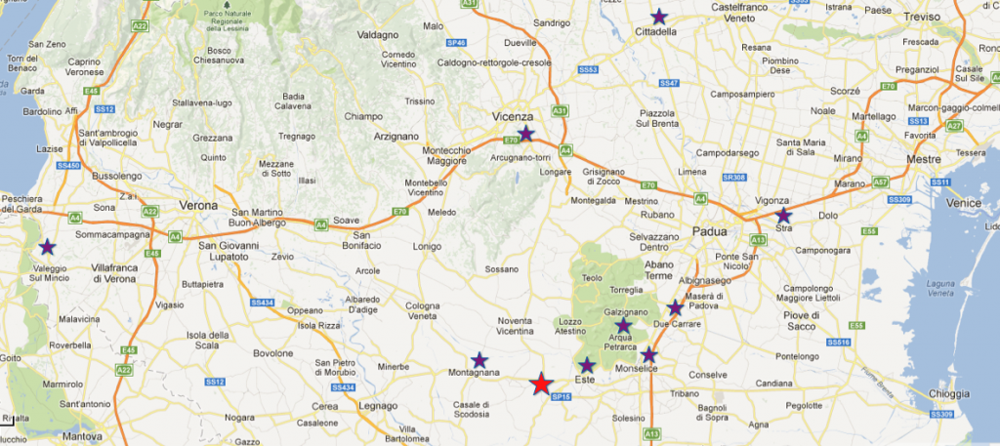
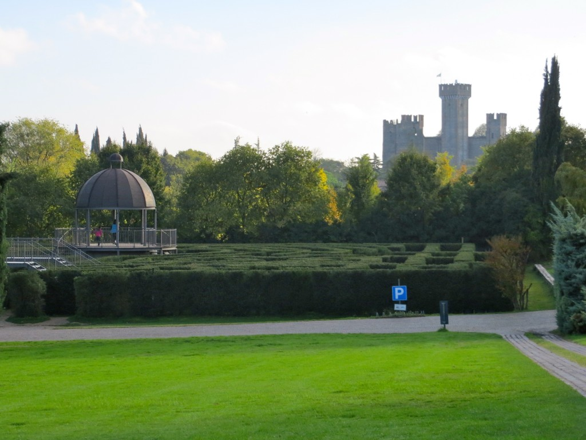
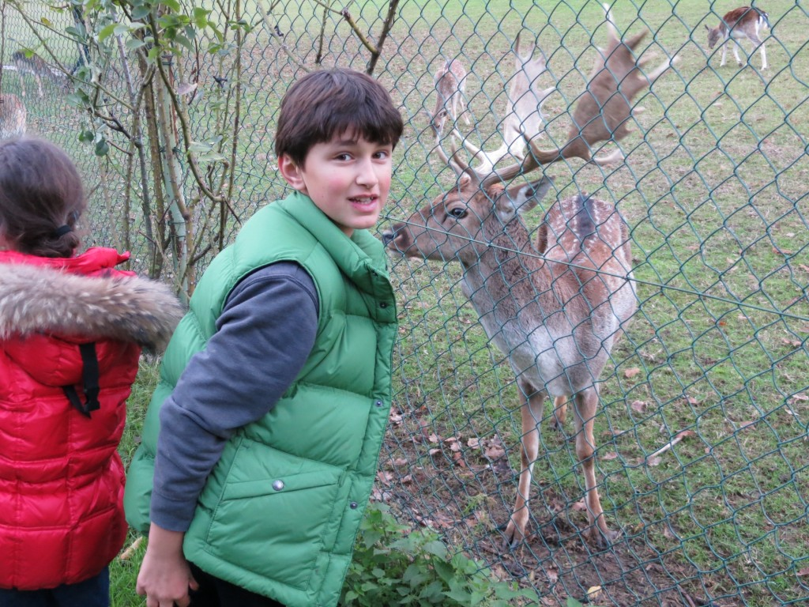
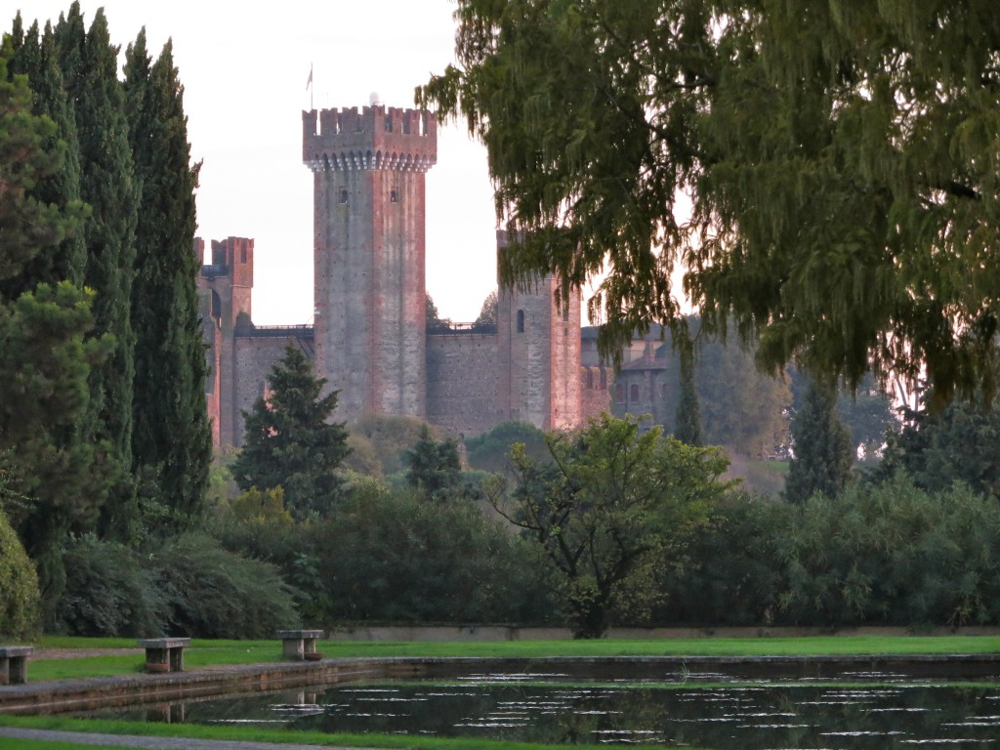
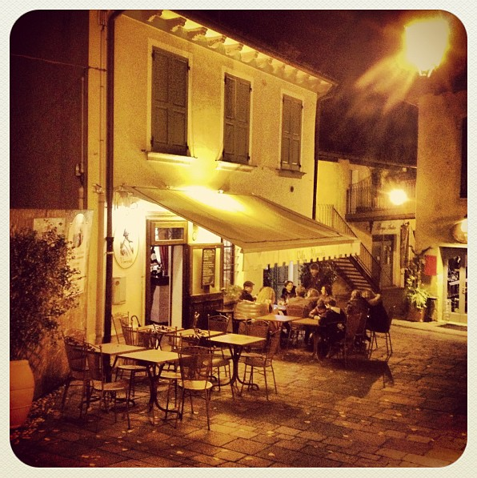
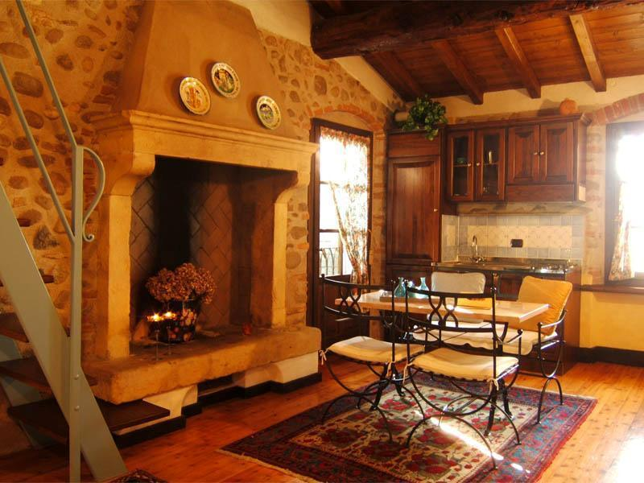

{kind=link}

This past week the school was closed thanks to some national and local holidays, and as a result we were blessed by a 4 day long weekend. For this reason I decided to take the kids to explore our beautiful country, and since they are still in the "are we there yet?" phase, I chose a pretty close destination and decided to go to Veneto, our neighboring region. I based my itinerary mainly on one thing: finding the hedge mazes of the villas' gorgeous gardens, in order to introduce some fun into the planning for both the kids and my sake (you know how it is once they start complaining...). Our first stop was at Parco Sigurta', in Valleggio sul Mincio, near Verona (the little purple star on the far left).
The above image shows the maze, with the castle in the background (the castle, Castello Scaligero, is not within the park though). What's amazing about this venue is its majesty: it is an extensive and very well kept property that you can visit by bike, golf cart (which we rented and was definitely worth the 18 Euros), or by shuttle. It has a turtle pool, a rose avenue, a hermitage, lots of meadows, and also an area exclusively for deers, as you can see below.
I'm sure that if you visit this park in Spring, with all the flowers in bloom, the effect is spectacular. You can actually see some photos on the Park website to get an idea. However, even in November it was worth a visit.
After visiting the park, we stopped in Borghetto, a tiny medieval village just a few minutes from Parco Sigurta'. What makes this place unique is the fact that most of the houses still have working water mills integrated into their architecture.
This is a photo that I took with Instagram and that I published on our FaceBook page. Unfortunately it is the only decent photo that I can share with you, because it was already 6pm when we got there. However, you can see more photos on this little inn website, that offers such unique accommodations like this one:
After visiting Borghetto we left and started heading toward the hotel I reserved in Ospedaletto Euganeo (marked on the map with the red star), a very small town south of Padua, that I chose as a base for our day trips. We arrived at the Hotel Villa Altura pretty late, at 9.45pm. Fortunately the hotel restaurant was still open, so we could enjoy a pizza without worrying about finding a place to eat that late at night. After dinner, we went to bed in our newly remodeled hotel rooms, tired but happy for a very interesting day. I was particularly happy because I could finally charge my iPhone which had only 9% of battery left (I used it as a GPS during the trip). This was my lesson learned for the day: next time I'll bring a battery integrated phone case.